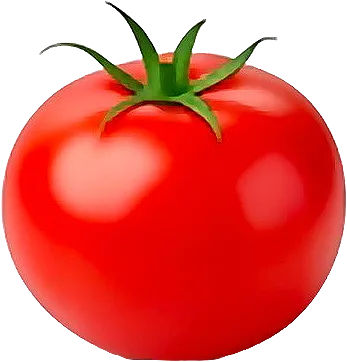

Tomate

Fruit au sens botanique, cuisinée comme un légume ; elle n’a de vraie saveur qu’en plein été.
- Saison : juin, juillet, août, septembre
- Pleine saison : juillet, août
- Famille botanique : Solanacées
Histoire
Originaire des Andes, la tomate a été domestiquée au Mexique avant d’être rapportée en Europe par les Espagnols au XVIᵉ siècle. De la même famille que la belladone, elle fut longtemps jugée toxique et cultivée comme plante ornementale, sous le nom de « pomme d’amour ». Elle ne s’impose dans la cuisine française qu’à la fin du XVIIIᵉ siècle, en commençant par la Provence.
Origine et régions de production
La France produit des tomates surtout sous serre, mais aussi en plein champ l’été :
- Bretagne
- Pays de la Loire
- Provence-Alpes-Côte d’Azur
- Occitanie
Les variétés anciennes (Cœur de bœuf, Noire de Crimée, Marmande) retrouvent leur place sur les marchés d’été.
Bienfaits
La tomate est l’un des piliers de l’alimentation méditerranéenne :
- Riche en lycopène : Ce pigment rouge antioxydant est mieux assimilé quand la tomate est cuite avec un peu d’huile.
- Très hydratante : Composée d’environ 94 % d’eau, pour à peine 20 kcal/100 g.
- Source de vitamine C : Surtout consommée crue et bien mûre.
- Potassium : Contribue au maintien d’une pression artérielle normale.
Variétés
- Cœur de bœuf : Charnue, peu de pépins : la reine des salades.
- Roma : Allongée et peu juteuse, parfaite pour les sauces.
- Cerise : Petite et sucrée, à croquer à l’apéritif.
- Noire de Crimée : Chair sombre au goût intense.
- Ananas : Gros fruit jaune-orangé, très doux.
Conserver sans gaspiller
- Conservation : À température ambiante, jamais au frigo : elle y perd son goût. 3 à 5 jours.
- Congélation : Entière, crue, dans un sac : la peau part toute seule en la passant sous l’eau chaude. Pour les sauces, jusqu’à 12 mois.
- Rien ne se jette : Trop mûres, elles font le meilleur coulis. Les tomates vertes de fin de saison se cuisinent en confiture ou en chutney.